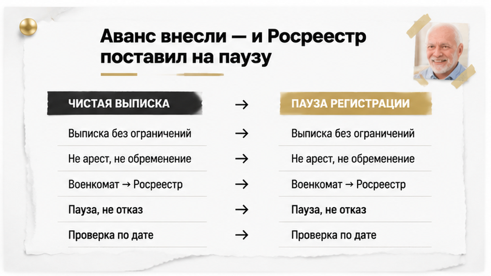
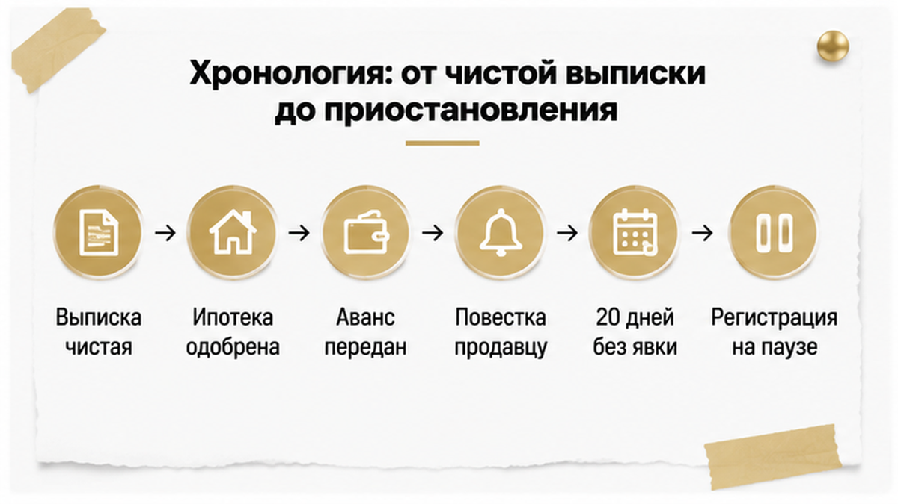
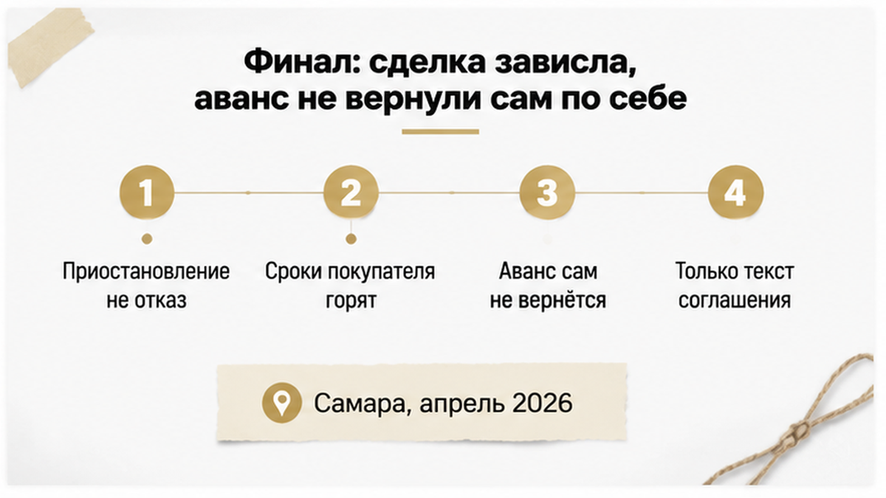
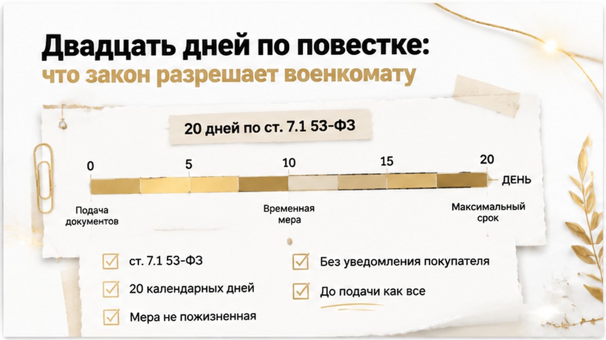
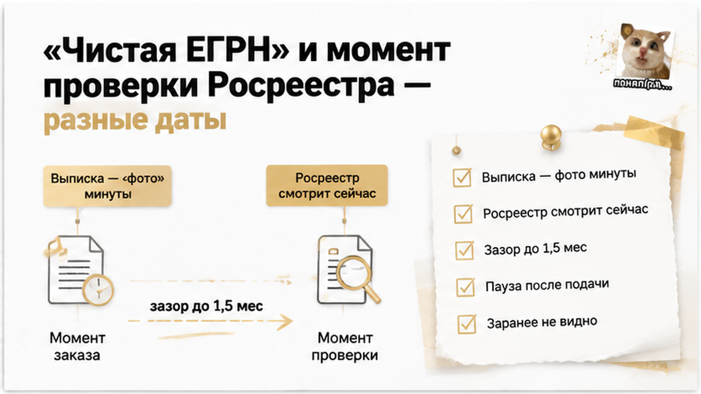
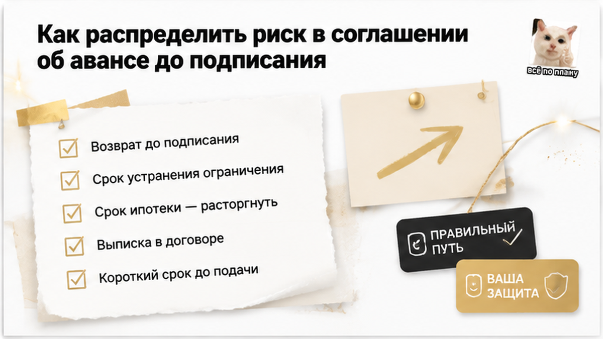

Аванс отдан, ипотека одобрена, документы сданы — а в личном кабинете вместо записи о регистрации висит уведомление о приостановлении. Продавец не мошенник, квартира не под арестом, накануне в выписке ЕГРН не было ни строчки про ограничения. Основание пришло оттуда, куда покупатель вторички не заглядывает вообще: военкомат зафиксировал неявку по повестке, вынес решение о временных мерах и направил его в Росреестр — так этот случай в Самарской области в апреле 2026 года описала «Медиазона». С августа мне в Тюмени звонят с одним вопросом: «Святослав, а как это увидеть в выписке?» Отвечаю сразу: по одной выписке — никак. И дальше вся история про то, где в этот момент лежат деньги покупателя и кто их возвращает.
Я — Святослав Шакин, The Риэлтор в Тюмени. Лично веду сделку от звонка до регистрации.
Полный разбор кейсов и как я это ловлю до аванса — в Telegram и MAX. Напишите — подключусь.

Обычный покупатель читает риск в выписке. Арест, запрет пристава, ипотека, аренда, притязание третьего лица — строчки, которые видно глазами. Нет строчек — значит чисто, значит можно нести деньги.
Риэлтор спрашивает другое: на какую дату «чисто» и сколько дней пройдёт до подачи?
В самарской истории основание жило не в реестре недвижимости. Военкомат зафиксировал неявку, сформировал решение о временных мерах и отправил его в Росреестр. Регистратор приостановил рассмотрение заявления. Покупатель узнал об этом из уведомления, где фигурировала запись в книге учёта арестов о запрете на регистрационные действия. Проверять было нечего — того, что остановило сделку, в день проверки просто не существовало.
И сразу разведу четыре слова, которые склеиваются в одно пугающее «обременение».
Приостановление регистрации — пауза в рассмотрении заявления, дело живо. Запрет на регистрационные действия — уже внесённая запись, из-за которой переход права не пройдёт. Отказ в регистрации — финал по конкретному заявлению. Обременение — ипотека, аренда, рента: то, что живёт в выписке долго и видно заранее.
Покупатель поймал именно первое — паузу по внешнему основанию. Не арест, не отказ, не строчку, которую поленился прочитать.
Вывод для тюменской вторички неприятный. Проверка, которую вы считаете финальной, закрывает вопрос ровно на дату выписки. Дальше идёт коридор: справки, оценка, одобрение объекта банком, запись на подачу, сама подача. Две недели, иногда полтора месяца. И в этом коридоре может появиться основание, которого утром не было. Ровно так ломаются сделки, где ипотеку одобрили, а регистрацию остановила одна строка в ЕГРН: одобрение банка и регистрация — два разных события с двумя разными датами.

Разложу по шагам — как это видит покупатель. Каждый шаг по отдельности выглядит абсолютно нормально.
Смотрите на шаги три и четыре. Между передачей денег и появлением основания нет ни одной связи, которую покупатель мог бы отследить. Он не участник этой переписки, доступа к чужому личному кабинету нет, а выписку из реестра повесток за другого человека он заказать не может — её получает только сам гражданин.
Значит, работать остаётся не с проверкой, а со сроками и текстом соглашения. «Мы же проверили» — не аргумент, это дата на бумажке.
Поэтому я так занудно гоняю клиентов по срокам до внесения денег. В истории, где за 48 часов до торгов квартиру подарили дочери, на дату проверки тоже всё было идеально. Разница между «чисто вчера» и «чисто в момент рассмотрения заявления» — не юридическая тонкость, а деньги покупателя.

Теперь то, ради чего историю стоит дочитать. Приостановление — не отказ. Временная мера снимается, когда человек является по повестке или подтверждает уважительную причину неявки. Юридически ситуация решаемая.
Только решается она в темпе продавца и военкомата, а не в вашем.
А у покупателя горят свои сроки. Одобрение ипотеки конечно по времени, ставка зафиксирована не навсегда, страховка оплачена, съёмная квартира сдана, у его покупателей своя цепочка. Пауза на несколько недель на практике означает перезапуск половины сделки.
И первый вопрос у каждого: аванс-то вернут?
Сам по себе — нет. Нет нормы, по которой приостановление регистрации автоматически возвращает покупателю деньги или превращает их в двойной задаток. Судьбу аванса определяет только соглашение: считается ли невозможность зарегистрировать переход права основанием для возврата, кто отвечает за обстоятельства на стороне продавца, в какой срок деньги уходят обратно, что происходит, если пауза затянулась дольше согласованного. Если в бумаге про это ни слова — сначала переписка, потом переговоры, потом суд, если продавец возвращать не настроен. Классика жанра: я разбирал случай, когда расписку написали, а денег на счёте не оказалось — бумага есть, деньги у другой стороны, год уходит на возврат.
Про масштаб скажу отдельно, чтобы не пугать зря. Подтверждённый пример один — Самарская область, апрель 2026 года. Массовой практики по Тюмени я не вижу и утверждать её не буду. Но механизм рабочий, законный и ничьего согласия не требует. А значит, он уже часть риска любой сделки, где на стороне продавца мужчина призывного возраста.
Нужно ли теперь запрашивать выписку из реестра повесток у продавцов-мужчин — или это паранойя? Напишите в комментариях, что вы ответите продавцу, который на такую просьбу скажет: «А с какой стати?»

«Святослав, а нам какое дело до его военкомата? Мы квартиру покупаем, а не человека». Слышу это каждый раз, когда объясняю схему. Отвечаю так же: до военкомата вам дела нет ровно до дня, когда ваше заявление легло на стол регистратору.
Основание для паузы не в жилищном законодательстве и не в 218-ФЗ. Оно в статье 7.1 закона № 53-ФЗ, и о вашей квартире там нет ни слова. У повестки есть дата явки. Не явился, уважительную причину не подтвердил — течёт срок: 20 календарных дней со дня, указанного в повестке. Прошли — могут применяться временные меры.
Большинство мер к недвижимости отношения не имеет. Но одна имеет прямое: приостановка кадастрового учёта и государственной регистрации прав — той процедуры, через которую проходит каждая купля-продажа.
Вдумайтесь. Человек владеет квартирой, показывает её вам, подписывает договор, идёт подавать документы. И только на последнем шаге механизм упирается.
Дальше то, что удивляет сильнее всего. Никто не приходит к продавцу заранее: «через неделю поставим паузу, предупредите контрагентов». Решение формируется автоматически, подписывается военным комиссаром и уходит в Росреестр. Между «не пошёл в военкомат» и «регистрацию поставили на паузу» нет ни переговоров, ни судебного заседания, ни уведомления покупателю. Отрабатывают сроки, а не люди.
Есть и обратная сторона — до того, как рвать сделку в панике. Мера не пожизненная: отменяется при явке в военкомат или при подтверждении уважительной причины. Этим ситуация отличается от ареста по долгам и спора о праве — снятие зависит от действия самого продавца, а не от воли пристава, банка или суда.
И про то, что в тюменских чатах перевирают чаще всего. Дата 14.04.2025 — про начало практики применения ограничений, а не про «новый закон, принятый в августе 2026». Никакой новой нормы летом 2026-го не появилось: появились первые публично описанные случаи, когда механизм добрался до сделок с недвижимостью.
Продавец, у которого срок истёк год назад, выглядит так же, как продавец без единого вопроса к военкомату: приветливо, спокойно, с полным пакетом документов. До момента подачи.

Вот настоящая ловушка, из-за которой история с авансом стала возможной.
Покупатель читает выписку из ЕГРН как справку о человеке: чисто — значит, надёжный. Я читаю её как фотографию объекта в конкретную минуту. Она показывает ограничения, которые уже внесены в реестр. Всего, что появится позже, в ней физически быть не может — этого ещё нет в природе.
А Росреестр проверяет наличие оснований не на дату вашей выписки, а на момент рассмотрения заявления.
Между этими датами проходит от двух недель до полутора месяцев: аванс, справки, оценка, одобрение банком, запись на подачу. В этот зазор и уложился описанный в апреле 2026 года случай в Самарской области — его разбирала «Медиазона». Регистрацию приостановили после решения военкомата из-за неявки по электронной повестке; в уведомлении фигурировала запись в книге учёта арестов о запрете на регистрационные действия. Подтверждённый пример, а не статистика: документально описанной волны таких приостановлений по Тюмени нет.
Заодно разведу четыре термина, которые слипаются в одно пугающее слово «обременение». Разница определяет и сроки, и то, что можно сделать.
| Термин | Что происходит с заявлением | Видно ли заранее в выписке ЕГРН | Чем снимается |
|---|---|---|---|
| Приостановление регистрации | Рассмотрение на паузе, заявление живо | Нет — возникает уже после подачи | Устранением причины приостановления |
| Запрет на регистрационные действия | Действия по объекту не совершаются | Да, если запись уже внесена в реестр | Снятием запрета тем органом, который его наложил |
| Отказ в регистрации | Заявление отработано с отрицательным итогом | Нет, это результат процедуры | Новой подачей после устранения причин |
| Обременение | Регистрация возможна, но право ограничено | Да, это запись в разделе выписки | Погашением записи об обременении |
В нашей истории речь шла о первой строке. Пауза в рассмотрении. Не арест, не отказ, не обременение, которое можно было увидеть до аванса. Упрёк «плохо проверил» здесь не работает: покупатель проверил то, что на тот момент существовало.
Это другой тип риска, чем привычная вторичка. Когда в другой тюменской сделке перед авансом всплыла умершая супруга продавца, информация была в документах — её нужно было запросить и сопоставить даты. Здесь запрашивать нечего: в правоустанавливающих бумагах нет ни строчки об отношениях продавца с военкоматом. А последствия те же, что и когда ипотеку одобрили, а регистрацию остановила одна строка в ЕГРН: деньги заморожены, банк ждёт, сроки одобрения тикают.
Практический вывод один, и он не про новые справки. Проверка перестала быть разовым действием: у неё минимум две контрольные точки — до передачи денег и перед подачей документов. Что происходит с продавцом в промежутке, вы не видите. Значит, закрывать это нужно не бумажкой, а текстом договорённостей.
Дальше начинается рыночная самодеятельность — её важно отличать от закона, потому что путают постоянно.
К августу 2026 года агентства стали просить участников сделки в возрасте от 18 до 65 лет показать свежую выписку из реестра повесток: кто-то до аванса, кто-то перед подачей документов. Практика «Этажей» августа 2026 года — обычай крупного игрока рынка, а не пункт из перечня Росреестра. Никто не обязан.
И вот деталь, о которую спотыкаются почти все покупатели: заказать такую выписку за продавца нельзя. Доступ есть только у самого гражданина — через Госуслуги или реестр повесток. Ни риэлтор, ни покупатель, ни банк её не получат, даже с доверенностью «на проверку документов». Механизм держится на доброй воле продавца: показал или не показал.
Обычный покупатель на этом сдаётся: раз запросить нельзя — значит, и говорить не о чем. Риэлтор спрашивает другое: как продавец отреагирует на просьбу? Реакция — тоже информация.
Что попросить можно. Показать выписку добровольно и датой как можно ближе к дате подачи заявления. Справка месячной давности говорит только о том, что было месяц назад, — в нашей истории именно месяц всё и решил. Можно посмотреть при встрече, можно приложить скан к пакету по сделке. Формулировка простая: «Это не про доверие. Это про то, чтобы у нас обоих не зависли деньги».
Что нельзя. Объявлять эту выписку обязательным документом сделки. Пугать продавца отказом Росреестра — отсутствие бумаги само по себе не основание ни для отказа, ни для приостановления. Риск создаёт не отсутствие справки, а уже применённая и действующая мера, которую военкомат направил регистратору. Бумага — не защита, а подсказка.
Продавец говорит: «А с какой стати я вам это показываю?» Ответ у меня всегда один: «С той, что если регистрацию поставят на паузу, вы останетесь с квартирой, а покупатель — без денег и без квартиры. Мне нужно знать заранее, а не из уведомления».
Дальше либо человек показывает, либо предлагает сократить срок между авансом и подачей до нескольких дней. Оба ответа рабочие. Плохой только один — «потом покажу».
И ещё раз, чтобы никто не побежал переписывать все свои сделки: ограничения касаются не всех мужчин-продавцов. Подтверждённый пример один — Самарская область, апрель 2026 года. В Тюмени документально описанной волны таких приостановлений нет. Есть настороженность рынка и один остановленный аванс.
Проверять продавца до денег дешевле, чем после. В другой тюменской истории перед авансом внезапно всплыла умершая супруга и неоформленное наследство — и там всё тоже решилось до передачи денег, а не в переписке после.

Самый неприятный вывод из этой истории — денежный. Приостановление регистрации из-за неявки по повестке не делает продавца мошенником, но и аванс покупателю не возвращает. Никакого «двойного задатка по умолчанию» не существует. Судьба денег зависит от того, что стороны написали до подписания, а не от того, кто выглядит правее в переписке.
| Что случилось после аванса | Как читается соглашение без оговорки | Что вписывают до подписания |
|---|---|---|
| Росреестр приостановил регистрацию из-за меры, применённой военкоматом | Ситуация не описана: продавец «не отказывался», покупатель «не получил квартиру» — спор | Приостановление по обстоятельствам на стороне продавца — основание для возврата аванса в согласованный срок |
| Продавец обещает явиться и снять ограничение | Срок ожидания не оговорён, пауза становится бессрочной | Предельный срок устранения обстоятельства и дата повторной подачи; после её истечения — возврат |
| Одобрение по ипотеке истекает, пока сделка висит | По умолчанию это проблема покупателя | Истечение срока одобрения из-за приостановления — основание расторгнуть соглашение без удержания |
| Продавец не хочет показывать выписку из реестра повесток | Условия нет — требовать нечего | Обязанность предоставить актуальную выписку к дате подачи и последствия непредоставления |
Дальше — короткий порядок действий. Занимает один вечер и стоит дешевле любого спора.
Разбираю такие соглашения об авансе построчно — до того, как деньги ушли. Пишите в Telegram или в MAX.
Уведомление о приостановлении — пауза, не отказ.
По статье 7.1 закона № 53-ФЗ меру снимает явка в военный комиссариат или подтверждение уважительной причины: решение автоматически уходит в Росреестр, отмена идёт тем же путём. Ни переписка с покупателем, ни звонок риэлтора здесь не помогут — только действие продавца. Пока длится пауза, текут сроки ипотечного одобрения и справок, а квартира остаётся квартирой продавца. Поэтому возврат денег обсуждают до аванса.
Выписка из ЕГРН — фотография прошлого: ограничение может появиться после вашей проверки, как одобренная ипотека не спасает, когда регистрацию останавливает строка в ЕГРН. Управляемы только короткие сроки и текст соглашения.
Материал проверен: Святослав Шакин, личный риэлтор в Тюмени. Ориентир для покупателя, не индивидуальная юридическая консультация.